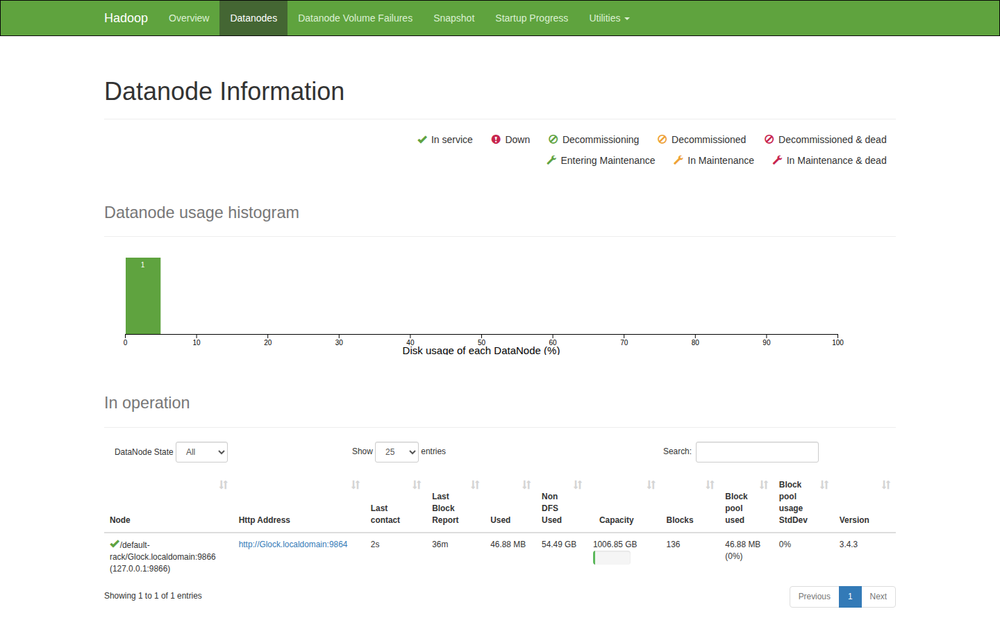
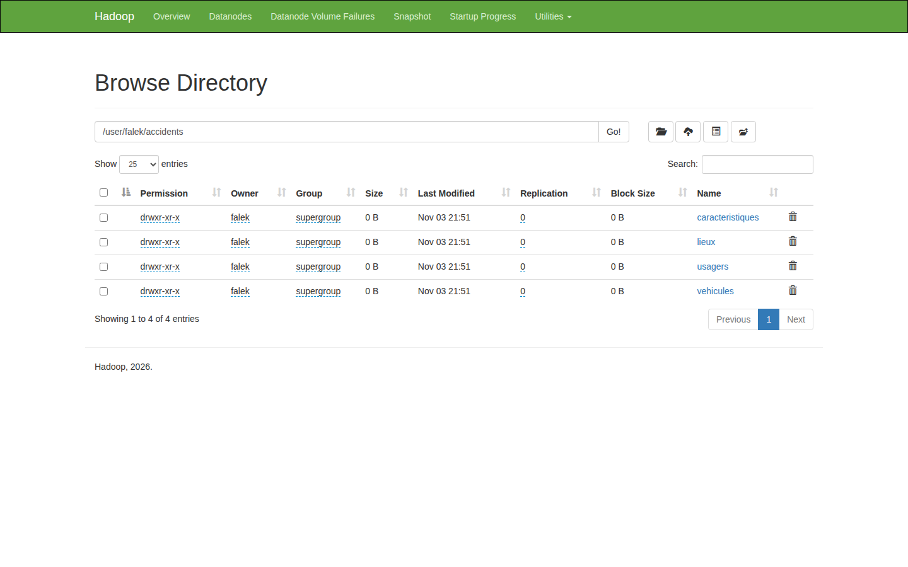
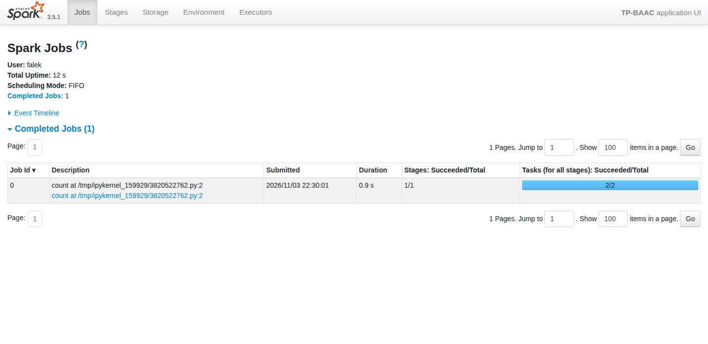
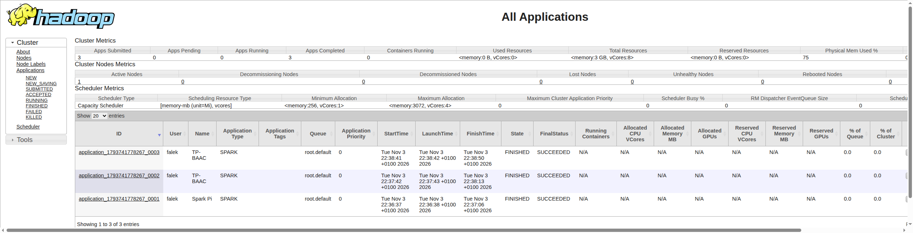
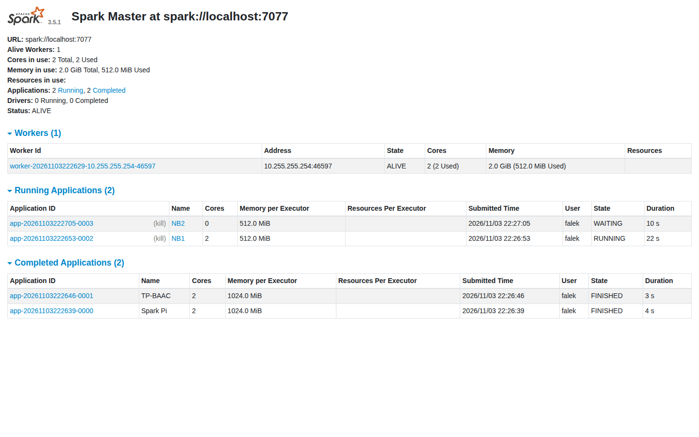

Falek SEHILI. M1 Cybersécurité et Sciences des Données, Conférence industrielle (I. Zeroual), 2026/2027.
| Adaptation | Raison |
|---|---|
| Hadoop 3.4.3 au lieu de 3.5.0 | Hadoop 3.5.0 demande Java 17, alors que la commande hive 3.1.3 échoue sous Java 17. |
| CSV nettoyés avant HDFS | Les fichiers bruts contiennent des guillemets, des espaces et des ; dans 3 adresses, ce qui fausse la lecture des colonnes. Aucun enregistrement n'est perdu. |
commons-collections ajouté à Hive | Hive 3.1.3 en a besoin et Hadoop 3.4.3 ne le fournit plus. |
spark.locality.wait 0 | Sans ce réglage, la Q5 en RDD restait bloquée en local[2]. |
| Mémoire limitée | YARN à 3 Go et conteneurs MapReduce à 512 Mo : la machine n'a que 7,7 Go. |
jps affiche les 5 démons attendus. Le job pi 2 10 réussit en 16,7 s et donne 3,8 (valeur approchée, avec peu de tirages).
1. Quel processus est maître pour le stockage, et lequel pour le calcul ?
Le NameNode pour le stockage, le ResourceManager pour le calcul.
2. Pourquoi dfs.replication vaut-il 1, et quelle est sa valeur dans un vrai cluster ?
Il n'y a qu'un seul DataNode, donc une deuxième copie n'aurait nulle part où aller. Dans un vrai cluster, la valeur par défaut est 3.
3. Capture du NameNode montrant le DataNode actif

1. Taille et nombre de blocs des fichiers dans HDFS
| Fichier | Octets | Blocs | Enregistrements |
|---|---|---|---|
| caracteristiques | 4 893 792 | 1 | 54 402 |
| lieux | 4 403 482 | 1 | 70 248 |
| vehicules | 4 330 582 | 1 | 92 678 |
| usagers | 9 425 214 | 1 | 125 187 |
2. Combien de blocs pour usagers avec des blocs de 1 Mo ?
fsck signale 9 blocs. Le calcul concorde : 9 425 214 / 1 048 576 = 8,99, arrondi à 9.
3. Que fait hdfs dfs -getmerge ?
Il concatène tous les fichiers d'un répertoire HDFS dans un seul fichier local. Pour lieux, le fichier obtenu fait 70 249 lignes, en-tête compris.
4. Pourquoi le NameNode ne stocke-t-il pas le contenu, et où est la liste des blocs ?
Le NameNode ne garde que les métadonnées pour rester rapide, le contenu étant réparti sur les DataNodes. La liste des blocs de chaque fichier est conservée par le NameNode, en mémoire et sur disque (fsimage et edits).
5. Capture du répertoire accidents

accidents dans HDFS.1. Table externe ou gérée, et effet de DROP TABLE usagers ?
Une table gérée appartient à Hive : la supprimer efface aussi ses fichiers. Une table externe décrit des fichiers existants : DROP TABLE usagers; efface la définition, et les fichiers restent dans HDFS.
2. Quel moteur d'exécution, et comment un GROUP BY correspond-il à map, shuffle et reduce ?
Le moteur est MapReduce. Le map émet une paire (clé, valeur) par ligne, le shuffle regroupe les paires par clé, et le reduce calcule l'agrégat de chaque clé.
3. De combien ORC est-il plus petit, et pourquoi est-il plus rapide à parcourir ?
ORC est 83,0 % plus petit : 1 601 892 octets contre 9 425 214. Il est plus rapide en principe, car il ne lit que les colonnes utiles, déjà compressées.
Ce gain n'apparaît pas dans ma mesure : 21,5 s en ORC contre 19,8 s en CSV. Sur un si petit fichier, le temps est surtout celui du lancement des jobs MapReduce.
4. Résultats et durées de Q1 à Q9
Voir le tableau suivant, commun à Hive, RDD, DataFrame et SQL.
Hive, RDD, DataFrame et Spark SQL donnent les mêmes résultats pour les 9 questions.
| Q | Résultat |
|---|---|
| Q1 | 54 402 accidents, 92 678 véhicules, 125 187 usagers |
| Q2 | Accidents par mois : janv. 4069, févr. 3792, mars 4370, avr. 4586, mai 4517, juin 5135, juil. 5209, août 4450, sept. 4620, oct. 4803, nov. 4477, déc. 4374 |
| Q3 | Indemnes 52 920 (42,27 %), tués 3 432 (2,74 %), hospitalisés 19 126 (15,28 %), blessés légers 49 709 (39,71 %) |
| Q4 | Départements : 75 (4191), 93 (2640), 92 (2485), 13 (2120), 94 (1963), 69 (1627), 91 (1348), 33 (1202), 77 (1068), 59 (1023) |
| Q6 | Véhicule léger 1898, moto > 125 cm³ 512, bicyclette 204, véhicule utilitaire 196, cyclomoteur 120 |
| Q7 | Âge moyen des personnes tuées : hommes 46,02 ans, femmes 54,56 ans |
| Q9 | 24 véhicules sans usager, comme annoncé par l'ONISR |
| Lumière | Accidents | Tués |
|---|---|---|
| Plein jour | 35 580 | 1933 |
| Crépuscule ou aube | 3 599 | 244 |
| Nuit sans éclairage public | 6 101 | 883 |
| Nuit, éclairage non allumé | 623 | 63 |
| Nuit, éclairage allumé | 8 499 | 309 |
| Route | Accidents | Lignes de lieux | vma moyenne |
|---|---|---|---|
| 1 Autoroute | 5 051 | 5 116 | 96,16 |
| 2 Route nationale | 3 491 | 3 810 | 74,93 |
| 3 Route départementale | 20 230 | 24 361 | 62,62 |
| 4 Voie communale | 22 763 | 30 809 | 43,76 |
| 5 Hors réseau public | 49 | 53 | 35,66 |
| 6 Parking | 404 | 405 | 30,43 |
| 7 Route de métropole urbaine | 1 484 | 1 866 | 55,22 |
| 9 Autre | 190 | 197 | 43,21 |
Un accident peut avoir plusieurs lignes dans lieux, d'où les deux comptes. La moyenne inclut 28 lignes aux valeurs aberrantes (300 à 900), présentes dans les données.
| Moteur | Q1 | Q2 | Q3 | Q4 | Q5 | Q6 | Q7 | Q8 | Q9 |
|---|---|---|---|---|---|---|---|---|---|
| Hive | 75,53 | 40,23 | 61,17 | 40,20 | 77,84 | 43,71 | 42,36 | 44,55 | 21,89 |
| RDD | 1,18 | 0,45 | 0,51 | 0,16 | 1,04 | 0,71 | 0,38 | 1,76 | 0,91 |
| DataFrame | 2,13 | 0,47 | 0,40 | 0,28 | 0,87 | 0,48 | 0,34 | 0,62 | 0,44 |
| Spark SQL | 0,26 | 0,24 | 0,41 | 0,16 | 0,44 | 0,35 | 0,28 | 0,48 | 0,31 |
Une seule exécution par mesure. Hive tourne sur YARN et Spark en local[2] : l'écart vient surtout du coût de lancement de MapReduce. Spark SQL passe après le DataFrame dans le même programme, sa JVM est déjà chaude : cela ne prouve pas qu'il est plus rapide.
| Mode | Qui alloue les ressources | Où voir l'application | count() (s) |
|---|---|---|---|
| local[2] | Personne : 2 threads dans le driver | Port 4040 | 1,37 |
| Standalone | Le Master Spark | Ports 8080 et 4040 | 2,57 |
| YARN | Le ResourceManager | Ports 8088 et 4040 | 2,19 |
Combien de conteneurs pour Spark Pi sous YARN, et lequel héberge le driver en mode client ?
3 conteneurs : 1 ApplicationMaster et 2 executors. Aucun n'héberge le driver : en mode client, il reste dans le processus spark-submit.
À quoi correspondent les composants de l'architecture Spark ?
Le driver est le processus spark-submit, le gestionnaire de cluster est le ResourceManager, et les executors sont les deux conteneurs restants.
Que change .master("yarn") par rapport à .master("local[2]") ?
En local[2], le driver et les tâches tournent dans le même processus. Avec yarn, le driver reste dans le notebook et les executors tournent dans des conteneurs YARN.
Que relève-t-on sur l'interface du Master Standalone ?
URL spark://localhost:7077, 1 worker, 2 cœurs et 2 Go. Spark Pi a utilisé 1 executor.
Deux notebooks sans spark.cores.max : que devient le second ?
Il reste en WAITING avec 0 cœur, car le premier a pris les 2 cœurs disponibles. C'est ce que montre la capture ci-dessous.

count() du notebook terminé.

1. Combien de partitions chaque RDD a-t-il, et pourquoi ?
2 partitions. Chaque fichier tient dans 1 bloc, mais textFile en demande au moins 2 par défaut.
2. Pourquoi préférer reduceByKey à groupByKey ?
reduceByKey agrège dans chaque partition avant d'envoyer, donc il transfère moins de données. Shuffle Write mesuré : 332 octets contre 1668 octets pour groupByKey.
3. Quelle opération de Q5 a créé une frontière de stage ?
reduceByKey et leftOuterJoin, car elles déclenchent un shuffle.
4. Quelles transformations de Q5 sont étroites, et lesquelles sont larges ?
Étroites : map, filter. Larges : reduceByKey, leftOuterJoin, sortByKey.
count(), 0,096 s au second, lu en mémoire.repartition(8) en déclenche un, coalesce(1) n'en déclenche pas.| Critère | Hive | RDD | DataFrame |
|---|---|---|---|
| Lignes de code | 5 | 5 | 4 |
| Durée (s) | 77,84 | 1,04 | 0,87 |
| Schéma connu du moteur | Oui (métastore) | Non | Oui |
| Optimisation automatique | Partielle (map join) | Non | Oui (Catalyst) |
1. Les résultats sont-ils identiques pour Q1 à Q9 ?
Oui, une fois les CSV nettoyés. Num_Acc est un nombre en DataFrame et un texte en Hive et en RDD, sans effet sur les résultats.
2. Quelle stratégie de jointure, et pourquoi éviter un shuffle pour la petite table ?
Spark utilise un BroadcastHashJoin. La table lieux filtrée est sous le seuil de 10 Mo : elle est copiée sur chaque executor, donc il n'est pas nécessaire de redistribuer les lignes par clé. Le seul Exchange de shuffle restant sert au groupBy.
3. De combien Parquet est-il plus petit, et que change le stockage en colonnes ?
Parquet est 76,7 % plus petit : 2 195 523 octets contre 9 425 214. Une requête sur grav ne lit que cette colonne, comme le montre le plan (FileScan parquet [grav]). Durée mesurée : 0,265 s contre 0,328 s en CSV.
4. Quand choisir encore un RDD plutôt qu'un DataFrame ?
Pour des données non structurées, comme du texte ou des logs irréguliers, ou pour un traitement difficile à exprimer en colonnes.